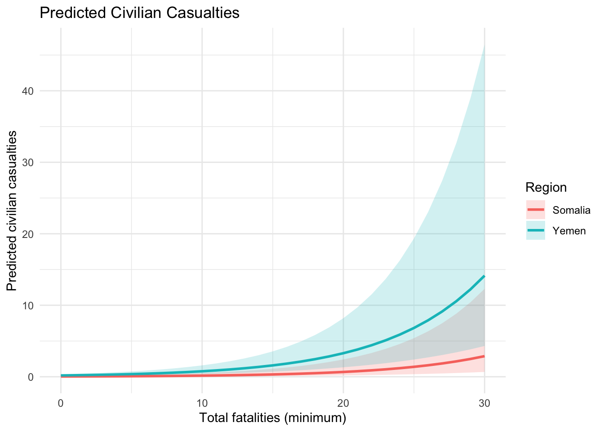
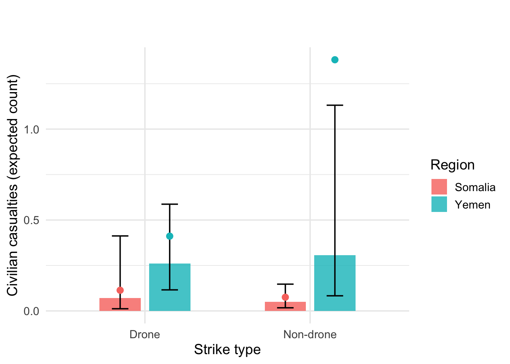
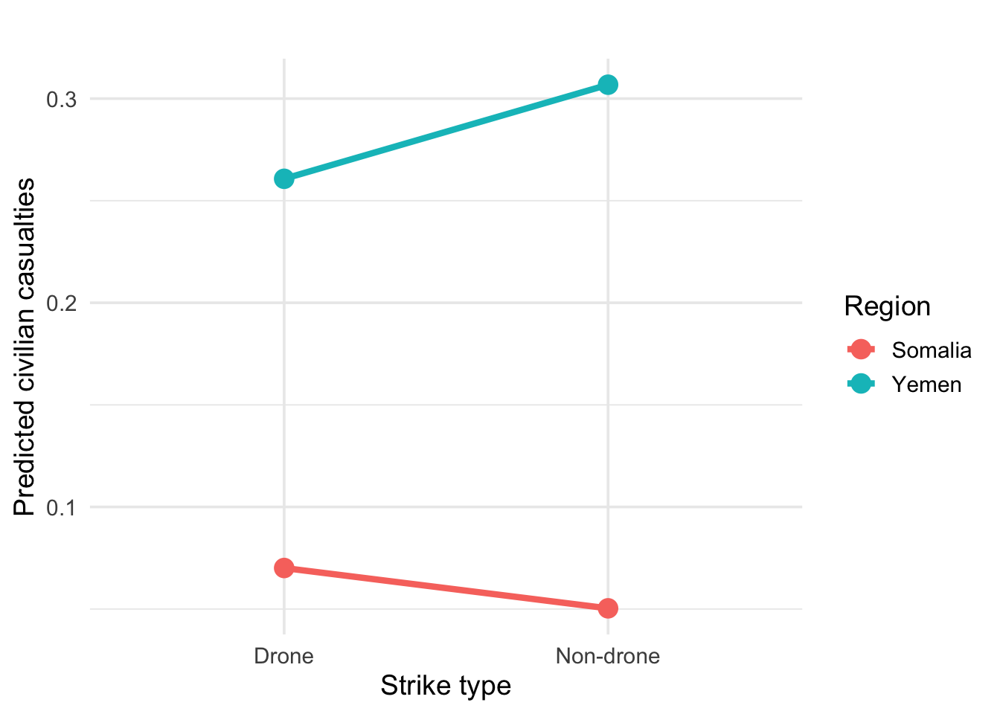
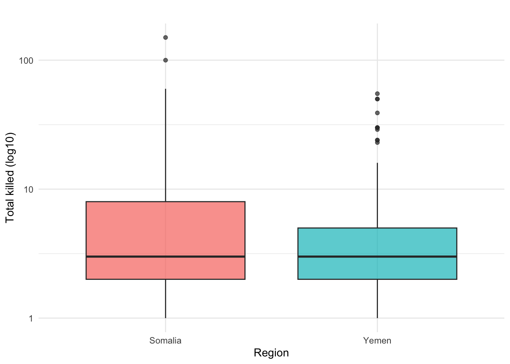
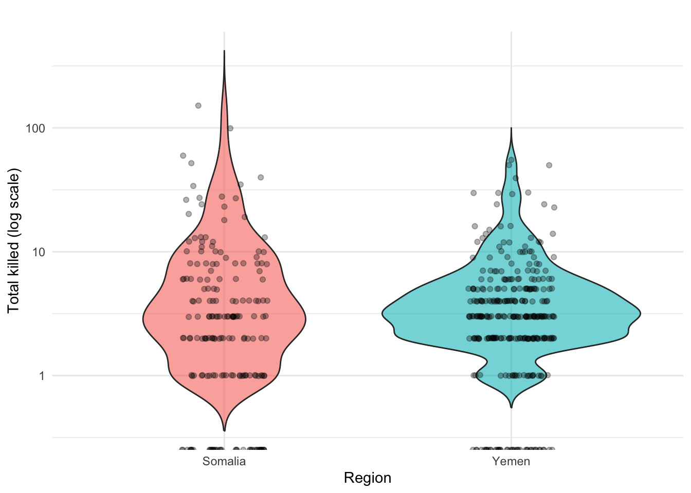

| Variable | Description |
|---|---|
| Civilian casualties | Number of civilians reported killed in the strike (outcome variable). |
| Region | Country where the strike occurred (Somalia or Yemen). |
| Drone | Indicates whether the strike was carried out by a drone (1 = drone). |
| US confirmed | Whether the strike was officially confirmed by the U.S. government. |
| Minimum strikes | Minimum number of strike events associated with the record. |
| Total killed | Minimum number of total fatalities (civilians + militants). |
How Do the Characteristics and Humanitarian Impacts of U.S. Counterterrorism Strikes Differ Between Somalia and Yemen?
Counterterrorism
Humanitarian Impact
Conflict Studies
Data Analysis
A comparative analysis of U.S. counterterrorism strikes in Somalia and Yemen, examining strike characteristics, civilian casualties, and reporting uncertainty using open-source data and negative binomial regression.
Introduction
Since 2002, the United States has waged a clandestine drone war in countries like Yemen and Somalia, often far from the public eye [1]. While these counterterrorism strikes aim to eliminate militant targets with minimal risk to U.S. forces, their humanitarian impacts remain a source of urgent concern. The cost to civilian lives can be high – for example, an investigation found that roughly one-third of those killed by U.S. drone strikes in Yemen in 2018 were likely civilians or pro-government allies [2].
This research addresses a critical problem: do the patterns and human costs of U.S. strikes differ between Somalia and Yemen, and if so, how? Understanding this is important both theoretically and practically.
Theoretically, comparing two distinct theaters of drone warfare can reveal how local context (from insurgent group dynamics to intelligence quality) influences strike outcomes. Practically, such analysis informs policy by identifying where drone operations are less effective in sparing civilians, guiding improvements to minimize collateral harm.
These strikes are carried out “out of sight,” but their consequences are very real [1]. Official accounts have often underestimated civilian casualties, prompting independent organizations to step in [2]. For instance, the U.S. government once claimed only 64–116 civilian deaths in all drone strikes outside warzones from 2009–2015, whereas independent monitors estimated several times higher [2]. Efforts to document the drone war’s toll have proliferated:
- Pitch Interactive’s Out of Sight, Out of Mind visualization illustrated every CIA drone strike and casualty in Pakistan [1].
- The Economist published infographics showing discrepancies between official and independent death counts.
- UCLA’s Drone Wars project created a comparative dataset across Afghanistan, Pakistan, Somalia, and Yemen using Bureau of Investigative Journalism (BIJ) data [3,4].
These initiatives underscore the need for rigorous comparative analysis — yet no study has systematically compared Somalia and Yemen in terms of strike characteristics and humanitarian outcomes. This paper fills that gap by leveraging detailed open-source strike records from both countries to quantitatively examine differences in civilian impact.
We explicitly test three hypotheses:
1.Hypothesis 1: Civilian Harm Difference
To test whether Somalia and Yemen differ in civilian casualty rates.
2.Hypothesis 2: Drone Effectiveness Across Countries
To test whether the impact of drone strikes differs between Somalia and Yemen, we estimate an interaction model:
3.Hypothesis 3: Reporting Uncertainty
To assess whether casualty reporting uncertainty differs between regions.
To investigate these hypotheses, we assemble a comprehensive dataset of U.S. counterterrorism strikes in Yemen and Somalia, drawn from independent monitoring organizations such as the Bureau of Investigative Journalism [1]. Because casualty counts are uncertain, our data use minimum–maximum ranges [1]. Given that casualty outcomes are over-dispersed count data, we employ negative binomial regression to model civilian casualties while controlling for strike features. This approach allows us to test whether “country” remains a significant factor in humanitarian outcomes once strike type and context are accounted for.
In the following section, we describe the data sources and methodology used in this analysis, before presenting results and implications for policy and scholarship.
Literature Review
Researchers and monitoring groups have spent many years examining how many people are killed in U.S. drone strikes, but most work focuses on one country at a time rather than comparing Somalia and Yemen directly.
Columbia Law School’s Human Rights Clinic, in Counting Drone Strike Deaths, shows that official U.S. numbers often underestimate civilian deaths. They recommend using casualty ranges (minimum–maximum) because information from the ground is often unclear [3].
The Bureau of Investigative Journalism (BIJ) collected open-source reports for every known strike in Yemen, Somalia, Pakistan, and Afghanistan. Their database records both minimum and maximum death counts and distinguishes civilians from militants when possible, noting that reports are often uncertain or contradictory [5].
New America’s Counterterrorism Wars project compiles strike data from Yemen and Somalia, listing total strikes and casualty ranges and explaining how they classify victims when reports are vague or disputed [6].
Together, these sources show that:
1. Independent groups usually find more civilian deaths than official U.S. reports.
2. Although detailed data exist for Yemen and Somalia, most previous analyses summarize each country separately rather than compare them statistically.
Our study fits into this work by using open-source strike records to conduct a direct, quantitative comparison between Somalia and Yemen. Using negative binomial regression, we test whether the countries differ in civilian casualty rates and the uncertainty of reported casualties, controlling for strike characteristics.
Statistical Methods
Hypothesis Tests
Hypothesis 1: Civilian Harm Difference
\[ \begin{aligned} H_{0}: &\ \text{Drone strikes have the same civilian impact in Somalia and Yemen.} \\ H_{1}: &\ \text{Drone strikes have different civilian impacts across the two regions.} \end{aligned} \]
To test whether Somalia and Yemen differ in civilian casualty rates, we estimate:
Hypothesis 2: Drone Effectiveness Across Countries
\[ \begin{aligned} H_{0}: &\ \text{Drone use affects civilian casualties in the same way in both Somalia and Yemen.} \\ H_{1}: &\ \text{Drone use affects civilian casualties differently across Somalia and Yemen.} \end{aligned} \]
To evaluate whether drones behave differently across countries, we added an interaction term (drone × region).
Hypothesis 3: Reporting Uncertainty Differenc
\[ \begin{aligned} H_{0}: &\ \text{Reporting uncertainty does not differ between Somalia and Yemen.} \\ H_{1}: &\ \text{Reporting uncertainty differs between Somalia and Yemen.} \end{aligned} \]
To assess whether casualty reporting uncertainty differs between regions, we model the uncertainty metric. We modeled casualty reporting uncertainty (defined as max_killed - min_killed) region and strike characteristics as predictors.
\[ \text{Uncertainty in casualties} = \text{Maximum killed} - \text{Minimum killed} \]
Model selection
Because our prediction variable is a count—specifically, the number of civilians killed in each strike—we use statistical models designed for count data. A natural starting point is the Poisson regression, which assumes that the mean and variance of the outcome are equal \(E(x) = \mathrm{Var}(x)\). However, in our dataset the variance is much larger than the mean, a condition known as overdispersion. When overdispersion is present, Poisson regression underestimates the true variability and produces misleadingly small standard errors. To address this, we use a negative binomial regression, which adds a dispersion parameter that allows the variance to exceed the mean. This makes the negative binomial model much better suited for modeling drone-strike casualty counts and provides more reliable estimates of how factors such as region, drone use, and confirmation status relate to civilian harm.
mean_civ <- mean(combined_model$civilian_casualties)
var_civ <- var(combined_model$civilian_casualties)
c(mean = mean_civ, variance = var_civ) mean variance
0.4338521 8.0043879
Showt that our data is overdispersion: \(E(x) < \mathrm{Var}(x)\)
In our combined Somalia–Yemen dataset, civilian casualties have a mean of 0.43 and a variance of 8.00, so the variance is about 18 times larger than the mean. This large variance-to-mean ratio indicates substantial overdispepersion.
To verify whether a Poisson model was appropriate for our outcome variable, we formally tested for overdispersion. We first fit a Poisson regression using civilian casualties as the count outcome and calculated the dispersion statistic by dividing the residual deviance by the residual degrees of freedom.
Poisson dispersion test
\[ \begin{aligned} H_0 &: \text{dispersion} = 1 \quad (\text{Poisson adequate})\\ H_a &: \text{dispersion} > 1 \quad (\text{overdispersion}) \end{aligned} \]
library(MASS)
library(AER) # for dispersiontest
# Poisson version of H1 model
pois_h1 <- glm(
civilian_casualties ~ region + drone + us_confirmed +
min_strikes + total_killed,
family = poisson(link = "log"),
data = combined_model
)
# 3a. Quick dispersion estimate: residual deviance / df
dispersion_est <- pois_h1$deviance / pois_h1$df.residual
dispersion_est[1] 1.945971# 3b. Formal test
dispersiontest(pois_h1)
Overdispersion test
data: pois_h1
z = 2.3989, p-value = 0.008222
alternative hypothesis: true dispersion is greater than 1
sample estimates:
dispersion
11.36617
The resulting value of approximately 1.95 already suggested that the variance in the data was nearly twice as large as the Poisson model allows. We then conducted a formal overdispersion test using dispersiontest() from the AER package. The test returned a z-value of 2.40 with a p-value of 0.008, indicating statistically significant overdispersion. In other words, the Poisson assumption that the mean equals the variance is violated. Because the data exhibit much greater variability than the Poisson model can accommodate, this test confirms that a negative binomial regression—which includes an additional dispersion parameter—is more appropriate.
Consequently, we use negative binomial regression, which relaxes the equidispersion assumption and is more appropriate for these data.
1.Statistical Method for Civilian Harm Difference:
\[ \begin{aligned} \eta \;=\;& \beta_0 + \beta_1(\text{drone}) + \beta_2(\text{region}) + \beta_3(\text{US confirmed}) \\ &\quad + \beta_4(\text{minimum strikes}) + \beta_5(\text{total killed}) \end{aligned} \]
\[ E(\text{civilian casualties}) = e^{\eta} \]
2.Statistical Method for Drone Effectiveness Across Countries:
\[ \begin{aligned} \eta \;=\;& \beta_0 + \beta_1(\text{drone}) + \beta_2(\text{region}) + \beta_3(\text{drone} \times \text{region}) \\ &\quad + \beta_4(\text{US confirmed}) + \beta_5(\text{minimum strikes}) + \beta_6(\text{total killed}) \end{aligned} \]
\[ E(\text{civilian casualties}) = e^{\eta} \]
3.Statistical Method for Reporting Uncertainty Differenc:
\[ \begin{aligned} \eta \;=\;& \beta_0 + \beta_1(\text{region}) + \beta_2(\text{drone}) + \beta_3(\text{US confirmed}) \\ &\quad + \beta_4(\text{minimum strikes}) \end{aligned} \]
\[ E(\text{uncertainty in casualties}) = e^{\eta} \]
Statistical Testing
Hypothesis Test 1
library(dplyr)
library(stringr)
library(MASS)
library(broom)
###############################################
## 4. Negative binomial models for hypotheses
###############################################
# NOTE: we are using negative binomial ONLY .
################################
## Hypothesis 1: Civilian Harm ##
################################
# H0: Somalia and Yemen do not have significantly different civilian casualty rates,
# controlling for strike characteristics.
# H1: They do differ.
model_h1 <- glm.nb(
civilian_casualties ~ region + drone + us_confirmed + min_strikes + total_killed,
data = combined_model
)
summary(model_h1)
Call:
glm.nb(formula = civilian_casualties ~ region + drone + us_confirmed +
min_strikes + total_killed, data = combined_model, init.theta = 0.04945140151,
link = log)
Coefficients:
Estimate Std. Error z value Pr(>|z|)
(Intercept) -2.08959 1.02564 -2.037 0.0416 *
regionYemen 1.59150 0.64403 2.471 0.0135 *
drone -0.00298 0.58431 -0.005 0.9959
us_confirmed -0.19350 0.56118 -0.345 0.7302
min_strikes -1.02747 0.68030 -1.510 0.1310
total_killed 0.14571 0.01948 7.481 7.39e-14 ***
---
Signif. codes: 0 '***' 0.001 '**' 0.01 '*' 0.05 '.' 0.1 ' ' 1
(Dispersion parameter for Negative Binomial(0.0495) family taken to be 1)
Null deviance: 143.44 on 513 degrees of freedom
Residual deviance: 107.17 on 508 degrees of freedom
AIC: 469.8
Number of Fisher Scoring iterations: 1
Theta: 0.0495
Std. Err.: 0.0102
Warning while fitting theta: alternation limit reached
2 x log-likelihood: -455.8010 tidy(model_h1, exponentiate = TRUE, conf.int = TRUE) # IRR-style output# A tibble: 6 × 7
term estimate std.error statistic p.value conf.low conf.high
<chr> <dbl> <dbl> <dbl> <dbl> <dbl> <dbl>
1 (Intercept) 0.124 1.03 -2.04 4.16e- 2 0.0185 1.21
2 regionYemen 4.91 0.644 2.47 1.35e- 2 1.57 15.6
3 drone 0.997 0.584 -0.00510 9.96e- 1 0.326 2.80
4 us_confirmed 0.824 0.561 -0.345 7.30e- 1 0.246 2.40
5 min_strikes 0.358 0.680 -1.51 1.31e- 1 0.0657 1.03
6 total_killed 1.16 0.0195 7.48 7.39e-14 NA NA Rsult for Hypothesis 1: Civilian Harm Differences
Strikes in Yemen show significantly higher civilian casualties than those in Somalia.
The coefficient for Yemen is 1.59 (p = 0.0135), corresponding to an IRR of 4.9, meaning Yemen strikes produce nearly 5× the civilian casualties of Somalia.
Total fatalities are also positively associated with civilian casualties (coef = 0.146, p < 0.001).
Conclusion: Civilian harm is significantly higher in Yemen → H1 supported
Test for Hypothesis 2
##################################
## Hypothesis 2: Drone Effectiveness ##
##################################
# H0: The effect of drone strikes on civilian casualties does NOT differ between Somalia and Yemen.
# H1: The effect of drone strikes DOES differ between Somalia and Yemen.
# -> Include interaction term drone:region
model_h2 <- glm.nb(
civilian_casualties ~ drone * region + us_confirmed + min_strikes + total_killed,
data = combined_model
)
summary(model_h2)
Call:
glm.nb(formula = civilian_casualties ~ drone * region + us_confirmed +
min_strikes + total_killed, data = combined_model, init.theta = 0.04963878986,
link = log)
Coefficients:
Estimate Std. Error z value Pr(>|z|)
(Intercept) -2.15732 1.03711 -2.080 0.0375 *
drone 0.33091 1.00164 0.330 0.7411
regionYemen 1.80725 0.83212 2.172 0.0299 *
us_confirmed -0.21220 0.55986 -0.379 0.7047
min_strikes -1.02119 0.66922 -1.526 0.1270
total_killed 0.14319 0.01965 7.288 3.14e-13 ***
drone:regionYemen -0.49367 1.22774 -0.402 0.6876
---
Signif. codes: 0 '***' 0.001 '**' 0.01 '*' 0.05 '.' 0.1 ' ' 1
(Dispersion parameter for Negative Binomial(0.0496) family taken to be 1)
Null deviance: 143.81 on 513 degrees of freedom
Residual deviance: 107.26 on 507 degrees of freedom
AIC: 471.63
Number of Fisher Scoring iterations: 1
Theta: 0.0496
Std. Err.: 0.0103
Warning while fitting theta: alternation limit reached
2 x log-likelihood: -455.6270 tidy(model_h2, exponentiate = TRUE, conf.int = TRUE)# A tibble: 7 × 7
term estimate std.error statistic p.value conf.low conf.high
<chr> <dbl> <dbl> <dbl> <dbl> <dbl> <dbl>
1 (Intercept) 0.116 1.04 -2.08 3.75e- 2 0.0171 1.14
2 drone 1.39 1.00 0.330 7.41e- 1 0.215 11.5
3 regionYemen 6.09 0.832 2.17 2.99e- 2 1.38 32.8
4 us_confirmed 0.809 0.560 -0.379 7.05e- 1 0.241 2.36
5 min_strikes 0.360 0.669 -1.53 1.27e- 1 0.0671 1.02
6 total_killed 1.15 0.0196 7.29 3.14e-13 NA NA
7 drone:regionYemen 0.610 1.23 -0.402 6.88e- 1 0.0500 5.87Result for Hypothesis 2: Drone Effectiveness by Country
The key interaction term drone × region (Yemen) is not significant (coef = −0.49, p = 0.688).
Drone use alone is also not significant (coef = 0.33, p = 0.741).
Conclusion: Drones do not affect civilian casualties differently across countries → H2 not supported.
Test for Hypothesis 3
##################################
## Hypothesis 3: Reporting Uncertainty ##
##################################
# H0: The level of uncertainty in casualty reporting does not differ between Somalia and Yemen.
# H1: It does differ.
# Outcome: uncertainty_killed
model_h3 <- glm.nb(
uncertainty_killed ~ region + drone + us_confirmed + min_strikes,
data = combined_model
)
summary(model_h3)
Call:
glm.nb(formula = uncertainty_killed ~ region + drone + us_confirmed +
min_strikes, data = combined_model, init.theta = 0.2157180244,
link = log)
Coefficients:
Estimate Std. Error z value Pr(>|z|)
(Intercept) 0.64763 0.30943 2.093 0.03635 *
regionYemen -0.16294 0.26446 -0.616 0.53781
drone 0.61827 0.24966 2.476 0.01327 *
us_confirmed -0.69343 0.25255 -2.746 0.00604 **
min_strikes 0.08520 0.05284 1.612 0.10687
---
Signif. codes: 0 '***' 0.001 '**' 0.01 '*' 0.05 '.' 0.1 ' ' 1
(Dispersion parameter for Negative Binomial(0.2157) family taken to be 1)
Null deviance: 400.69 on 513 degrees of freedom
Residual deviance: 385.48 on 509 degrees of freedom
AIC: 1571.1
Number of Fisher Scoring iterations: 1
Theta: 0.2157
Std. Err.: 0.0218
2 x log-likelihood: -1559.1480 tidy(model_h3, exponentiate = TRUE, conf.int = TRUE)# A tibble: 5 × 7
term estimate std.error statistic p.value conf.low conf.high
<chr> <dbl> <dbl> <dbl> <dbl> <dbl> <dbl>
1 (Intercept) 1.91 0.309 2.09 0.0363 1.13 3.34
2 regionYemen 0.850 0.264 -0.616 0.538 0.536 1.33
3 drone 1.86 0.250 2.48 0.0133 1.18 2.91
4 us_confirmed 0.500 0.253 -2.75 0.00604 0.305 0.793
5 min_strikes 1.09 0.0528 1.61 0.107 0.990 1.28 ###############################################
## 5. Optional: quick descriptive checks
###############################################
# Mean civilian casualties by region & drone status
combined_model %>%
group_by(region, drone) %>%
summarise(
mean_civilian_casualties = mean(civilian_casualties, na.rm = TRUE),
n = n(),
.groups = "drop"
)# A tibble: 4 × 4
region drone mean_civilian_casualties n
<fct> <int> <dbl> <int>
1 Somalia 0 0.0753 146
2 Somalia 1 0.114 44
3 Yemen 0 1.38 76
4 Yemen 1 0.411 248# Mean uncertainty by region
combined_model %>%
group_by(region) %>%
summarise(
mean_uncertainty = mean(uncertainty_killed, na.rm = TRUE),
n = n(),
.groups = "drop"
)# A tibble: 2 × 3
region mean_uncertainty n
<fct> <dbl> <int>
1 Somalia 1.56 190
2 Yemen 1.84 324Result for Hypothesis 3: Reporting Uncertainty
Reporting uncertainty does not differ between regions (Yemen coef = −0.16, p = 0.538).
However, drone strikes show higher uncertainty (coef = 0.62, IRR = 1.86, p = 0.013), while confirmed U.S. strikes show lower uncertainty (coef = −0.69, IRR = 0.50, p = 0.006).
Conclusion: No regional difference in uncertainty → H3 not supported, though uncertainty varies by strike type.
Visualizations
Hypothesis Test 1
\[ \begin{aligned} H_{0}: &\ \text{Drone strikes have the same civilian impact in Somalia and Yemen.} \\ H_{1}: &\ \text{Drone strikes have different civilian impacts across the two regions.} \end{aligned} \]


Hypothesis Test 2


Hypothesis Test 3
\[ \begin{aligned} H_{0}: &\ \text{Reporting uncertainty does not differ between Somalia and Yemen.} \\ H_{1}: &\ \text{Reporting uncertainty differs between Somalia and Yemen.} \end{aligned} \]


Conlusion
Our analysis shows clear and meaningful differences in the humanitarian impact of U.S. counterterrorism strikes in Somalia and Yemen. Using negative binomial regression to account for overdispersed count data, we find that strikes in Yemen are associated with nearly five times the civilian casualties of those in Somalia, even after controlling for drone use, confirmation status, and strike characteristics. Contrary to expectations, drone strikes do not have significantly different effects across the two countries, suggesting that broader regional factors—not simply weapon type—shape civilian outcomes. We also find no regional difference in reporting uncertainty, although uncertainty is higher for drone and unconfirmed strikes. Together, these results highlight the importance of transparent casualty reporting and the need to consider local conflict conditions when evaluating the effectiveness and humanitarian cost of U.S. strikes.
References
[1] Currier, Cora. “Everything We Know So Far About Drone Strikes.” ProPublica, 5 Feb. 2013.
[2] Woods, Chris. “Why White House Civilian Casualty Figures Are a Wild Underestimate.” Bureau of Investigative Journalism, 1 July 2016.
[3] Columbia Law School Human Rights Clinic. Counting Drone Strike Deaths. Human Rights Institute, Columbia Law School, Oct. 2012.
[4] Bergen, Peter, David Sterman, and Melissa Salyk-Virk. “The Drone War in Somalia.” New America, 30 Mar. 2020.
[5] Bureau of Investigative Journalism. “Our Methodology.” BIJ.
[6] New America. “America’s Counterterrorism Wars: Methodology.” Future Security Program.